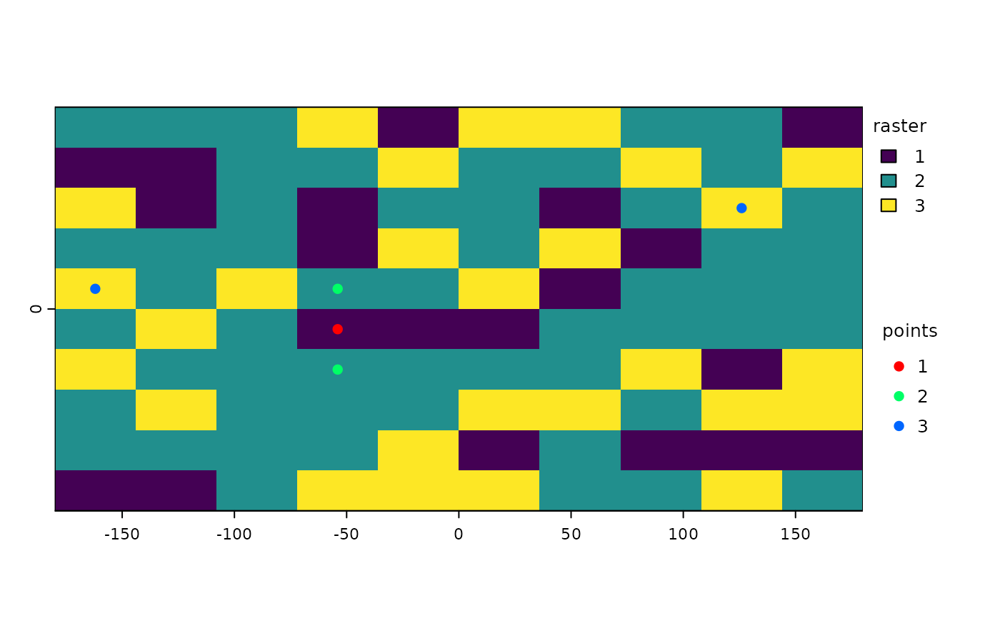

sample.RdTake a spatial sample from a SpatRaster, SpatVector or SpatExtent. Sampling a SpatVector or SpatExtent always returns a SpatVector of points.
With a SpatRaster, you can get cell values, cell numbers (cells=TRUE), coordinates (xy=TRUE) or (when type="regular" and as.raster=TRUE) get a new SpatRaster with the same extent, but fewer cells.
In order to assure regularity when requesting a regular sample, the number of cells or points returned may not be exactly the same as the size requested.
# S4 method for SpatRaster
spatSample(x, size, method="random", replace=FALSE, na.rm=FALSE,
as.raster=FALSE, as.df=TRUE, as.points=FALSE, values=TRUE,
cells=FALSE, xy=FALSE, ext=NULL, warn=TRUE, weights=NULL)
# S4 method for SpatVector
spatSample(x, size, method="random", strata=NULL, chess="")
# S4 method for SpatExtent
spatSample(x, size, method="random", lonlat, as.points=FALSE)SpatRaster, SpatVector or SpatExtent
numeric. The sample size. If x is a SpatVector, you can also provide a vector of the same length as x in wich case sampling is done seperately for each geometry. If x is a SpatRaster, and you are using method="regular" you can specify the size as two numbers (number of rows and columns)
character. Should be "regular" or "random", If x is a SpatRaster, it can also be "stratified" (each value in x is a stratum) or "weights" (each value in x is a probability weight)
logical. If TRUE, sampling is with replacement (if method="random"
logical. If TRUE, codeNAs are removed. Only used with random sampling of cell values. That is with method="random", as.raster=FALSE, cells=FALSE
logical. If TRUE, a SpatRaster is returned
logical. If TRUE, a data.frame is returned instead of a matrix
logical. If TRUE, a SpatVector of points is returned
logical. If TRUE cell values are returned
logical. If TRUE, cell numbers are returned. If method="stratified" this is always set to TRUE if xy=FALSE
logical. If TRUE, cell coordinates are returned
SpatExtent or NULL to restrict sampling to a a subset of the area of x
logical. Give a warning if the sample size returned is smaller than requested
SpatRaster. Used to provide weights when method="stratified"
if not NULL, stratified random sampling is done, taking size samples from each stratum. If x has polygon geometry, strata must be a field name (or index) in x. If x has point geometry, strata can be a SpatVector of polygons or a SpatRaster
character. One of "", "white", or "black". For stratified sampling if strata is a SpatRaster. If not "", samples are only taken from alternate cells, organized like the "white" or "black" fields on a chessboard
logical. If TRUE, sampling of a SpatExtent is weighted by cos(latitude). For SpatRaster and SpatVector this done based on the crs, but it is ignored if as.raster=TRUE
numeric matrix, data.frame, SpatRaster or SpatVector
f <- system.file("ex/elev.tif", package="terra")
r <- rast(f)
s <- spatSample(r, 10, as.raster=TRUE)
spatSample(r, 10)
#> elevation
#> 1 NA
#> 2 NA
#> 3 261
#> 4 NA
#> 5 352
#> 6 470
#> 7 NA
#> 8 273
#> 9 NA
#> 10 NA
spatSample(r, 10, "random")
#> elevation
#> 1 NA
#> 2 NA
#> 3 NA
#> 4 NA
#> 5 NA
#> 6 NA
#> 7 NA
#> 8 NA
#> 9 NA
#> 10 342
## if you require cell numbers and/or coordinates
size <- 6
# random cells
cells <- spatSample(r, 6, "random", cells=TRUE, values=FALSE)
cells <- as.vector(cells)
v <- r[cells]
xy <- xyFromCell(r, cells)
cbind(xy, v)
#> x y elevation
#> 1 6.095833 49.99583 500
#> 2 6.429167 49.86250 NA
#> 3 6.279167 49.49583 NA
#> 4 6.429167 49.75417 324
#> 5 6.387500 50.13750 NA
#> 6 5.795833 49.72917 NA
# regular
cells <- spatSample(r, 6, "regular", cells=TRUE, values=FALSE)
cells <- as.vector(cells)
v <- r[cells]
xy <- xyFromCell(r, cells)
cbind(xy, v)
#> x y elevation
#> 1 6.137500 50.12083 NA
#> 2 6.137500 49.97083 412
#> 3 6.129167 49.82083 328
#> 4 6.129167 49.67083 228
#> 5 6.129167 49.52083 275
# stratified
rr <- rast(ncol=10, nrow=10, names="stratum")
set.seed(1)
values(rr) <- round(runif(ncell(rr), 1, 3))
spatSample(rr, 2, "stratified", xy=TRUE)
#> x y stratum
#> 4 -18 81 1
#> 12 126 -27 1
#> 9 -162 81 2
#> 8 -54 -63 2
#> 2 162 -27 3
#> 21 54 -45 3
s <- spatSample(rr, 5, "stratified", as.points=TRUE)
plot(rr, plg=list(title="raster"))
plot(s, 1, add=TRUE, plg=list(x=185, y=1, title="points"))

## SpatExtent
e <- ext(r)
spatSample(e, 10, "random", lonlat=TRUE)
#> x y
#> [1,] 6.020936 49.81884
#> [2,] 5.829666 49.66598
#> [3,] 6.278460 49.64119
#> [4,] 6.229651 49.82328
#> [5,] 5.929836 49.97809
#> [6,] 6.061270 49.56783
#> [7,] 6.093894 49.45575
#> [8,] 6.123672 49.49052
#> [9,] 6.001417 49.66579
#> [10,] 5.864317 49.56398
## SpatVector
f <- system.file("ex/lux.shp", package="terra")
v <- vect(f)
#sample geometries
i <- sample(nrow(v), 5)
vv <- v[i,]